琴弦、調音與演奏設定
第 11 章・建議學習 1 小時
Strings and Setup: Tension, Action, Relief, Bridge Position and Intonation（琴弦與設定：張力、弦距、曲度、琴橋位置與音準）
本章重點
- 設定（Setup）是把木製結構與特定弦組調到「可演奏」的過程，是製造的一部分。
- 弦長變長，張力會以平方增加：33.5 cm 拉到 43.2 cm，理論張力約 1.66 倍。
- 換弦時琴橋可能移位，換完一定要重新檢查音準（intonation）。
- 診斷順序是：先確認症狀 → 再找來源 → 最後才做最小幅度調整。
- 同樣叫「打弦」，發生在空弦、某一格或強奏時，原因是完全不同的。
很多演奏者直到琴開始打弦、音準跑掉，或手開始痛，才第一次認真面對 Setup（設定）。
設定（Setup）是把一套木製結構，和特定弦組調整到可演奏狀態的過程。
它牽動的項目彼此互相影響：
- 弦徑（string gauge）
- 弦長（scale length）
- 張力（tension）
- 上弦枕（nut）
- 琴頸曲度（neck relief）
- 琴橋高度與位置
任何一項改動，都可能讓其他項目重新平衡。
曼陀林又比單弦樂器多一層複弦（course）問題。
同一個 course 的兩根弦，必須有一致的高度、間距與按弦感。
而且琴橋通常是浮動式（floating），換弦或碰撞就可能移位。
家族成員的弦長從 33 cm 級一路到 61 cm 級。
所以不能把標準曼陀林的弦組和 Setup 邏輯原封不動放大（Setup 見第 11 章）。
本章教你用「症狀」和「結構」來逐步診斷：
- 先確認症狀。
- 再判斷可能來源。
- 最後才做最小幅度調整。
這套流程比背標準數值更安全。
11.1 弦材、弦徑與張力
琴弦一上到標準音高，就對樂器施加持續張力。
不同弦徑（gauge）、芯線（core）、纏繞（winding）和材料，會改變單位重量（unit weight）。
所以在同樣的弦長和音高下，就需要不同的張力。〔S715〕
換弦不只是換「音色」，也可能改變四件事：
- 琴頸曲度
- 弦距手感
- 琴橋載荷
- 左手壓力
標準曼陀林的弦組分工如下：
| 弦組 | 常用做法 | 原因 |
|---|---|---|
| G／D course | 纏繞弦（wound strings） | 需要足夠的線密度 |
| A／E course | 可用較細的鋼弦（steel） | 不需要那麼大的質量 |
常見誤解：「同樣標 G 弦、同樣 gauge，張力就一樣。」
不一定。不同品牌的纏繞比例與芯線設計不同。
所以兩組標示相同 gauge 的弦，實際 unit weight 和張力也可能不完全一致。
如果想精確比較，應該看張力資料（tension data），把弦徑和張力一起比。
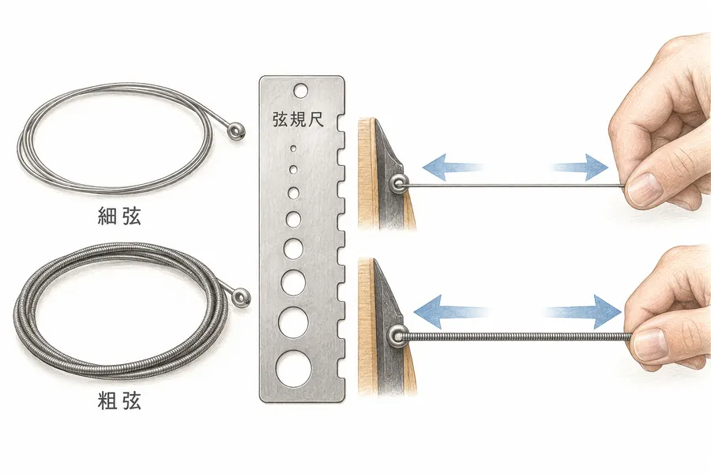
圖解 11.1 弦材 弦徑與張力（示意）
老琴尤其要慎重。
歷史琴可能原本承受較低的張力、不同的材料，或不同的音高標準（pitch standard）。
直接裝現代重弦不一定安全。
如果不確定結構狀態，應該先由熟悉該型制的製琴師評估。
| 重點與應用 | 內容 |
|---|---|
| 核心概念 | 琴弦一上到標準音高，就對樂器施加持續張力。 |
| 關係與條件 | 標準 mandolin 的 G/D course 通常需要 wound strings 取得足夠線密度，而 A/E course 可用較細 steel。 |
| 應用方向 | 檢查手感、音準與 Setup。 |
初學者買弦時，先核對四件事：琴型、弦長、原廠建議弦徑、張力。
島村指南提醒：圓背琴與美式琴的常用弦組，各有各的規格。
挑選時應以適用樂器與原廠資料為準。〔N01〕
實用做法有兩步：
- 把原有的弦袋拍照存檔，記下品牌、型號及四組弦的規格。
- 詢問店家「這組弦是否適合我的琴型與弦長」。
這比只說「我要曼陀林弦」，更容易買到合適的產品。
換弦方法見 11.3 與 21.8。
11.2 弦長與張力關係
D'Addario 的工程公式顯示一件事：
在單位重量（unit weight）和頻率（frequency）相同時，張力和弦長的平方成正比。
所以把 33.5 cm 的曼陀林弦長拉到 43.2 cm，其他條件完全不變的話，張力理論上會變成約 1.66 倍。
到 61 cm，更會超過 3 倍。
真實的曼陀拉／曼陀隆切羅當然不會這樣做。
它們會同時做三件事：降低音高、改弦徑、改纏繞方式。
目的就是把張力拉回「可演奏」且「結構安全」的範圍。〔S715〕
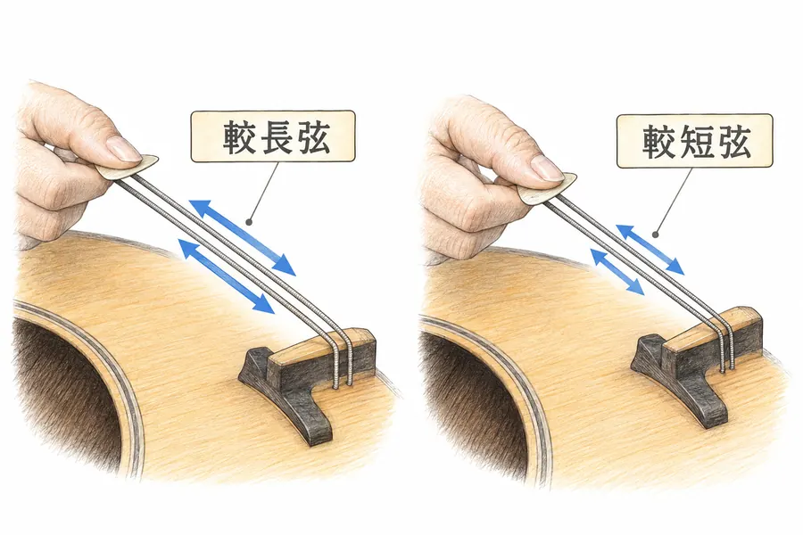
圖解 11.2 弦長與張力關係（示意）
現行 Calace 提供很清楚的家族對照：
| 樂器 | Calace 弦長 |
|---|---|
| 曼陀林（mandolin） | 33.5 cm |
| 曼陀拉（mandola） | 43.2 cm（部分可 45.6 cm） |
| 曼陀隆切羅（mandoloncello） | 61 cm |
Suzuki 2017 的數字則是：
| 型號 | 弦長 |
|---|---|
| M-30 | 336 mm |
| MD-4 | 426 mm |
| MC-836 | 574 mm |
〔S711〕〔S712〕〔S713〕〔S714〕
兩家連大型家族成員的弦長都不完全相同。
所以「曼陀琴弦」也要對應實際弦長與調弦。
這同時解釋了為什麼移調夾（capo）、降調或替代調弦（alternative tuning）會改變手感。
只要頻率改變，張力就會跟著平方關係變化。
演奏者覺得「降半音突然變很軟」，這不是心理作用。
| 重點與應用 | 內容 |
|---|---|
| 核心概念 | D'Addario 的工程公式顯示，在 unit weight 和 frequency 相同時，張力和 scale length 的平方成正比。 |
| 關係與條件 | 真實 mandola / mandoloncello 當然會同時降低音高、改 gauge 和 winding，目的就是把張力拉回可演奏且結構安全的範圍。 |
| 應用方向 | 檢查手感、音準與 Setup。 |
11.3 換弦前後的檢查
多數原聲曼陀林使用浮動琴橋（floating bridge）。
如果一次把八根弦全部拆下，琴橋就完全失去弦壓。
它在清潔過程中很容易移位。
重新上弦後，即使看起來位置差不多，只要前後差幾毫米，十二格音準就可能明顯偏差。
所以日常換弦有兩種做法：
- 分 course 更換（一次只拆一組）。
- 拆弦前用低黏性方法記錄琴橋位置。
但任何標記都只能是初始參考。
最後仍然要重新檢查 intonation。
琴橋在不同季節、不同弦組下，可能需要輕微調整。
不能把歷史位置當成神聖座標。
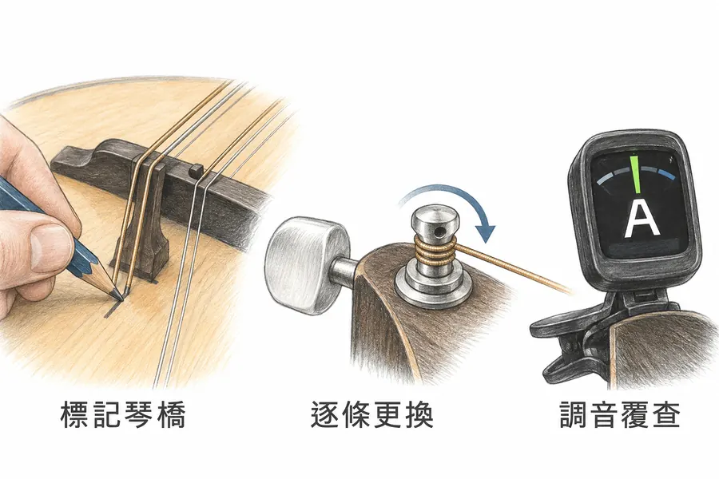
圖解 11.3 換弦前後的檢查（示意）
橋腳也要確認沒有因為移位而翹起。
雕刻面板（carved top）的橋腳，通常是針對特定曲面做貼合（fitting）的。
如果琴橋前後移得太遠，腳底和面板的曲率可能就不再完全貼合。
| 重點與應用 | 內容 |
|---|---|
| 核心概念 | 多數原聲曼陀林使用 floating bridge。 |
| 關係與條件 | 因此日常換弦可以分 course 更換，或在拆弦前用低黏性方法記錄琴橋位置。 |
| 應用方向 | 檢查手感、音準與 Setup。 |
11.4 上弦枕溝槽
這裡有一個很實用的診斷練習。
情況：空弦準，但第一格、第二格的按弦音普遍偏尖。
先檢查：上弦枕槽（nut slot）的高度。
原因：弦離琴格太高，按下去時需要額外拉長。
這個效應在低把位比例最大。
到十二格時，反而可能沒那麼誇張。
常見誤解：「低把位偏尖，就把琴橋往後移。」
這通常不是最佳解。
把琴橋往後移，雖然可以讓全指板平均變低，但會犧牲中高把位。
真正的根因可能仍然在 nut。
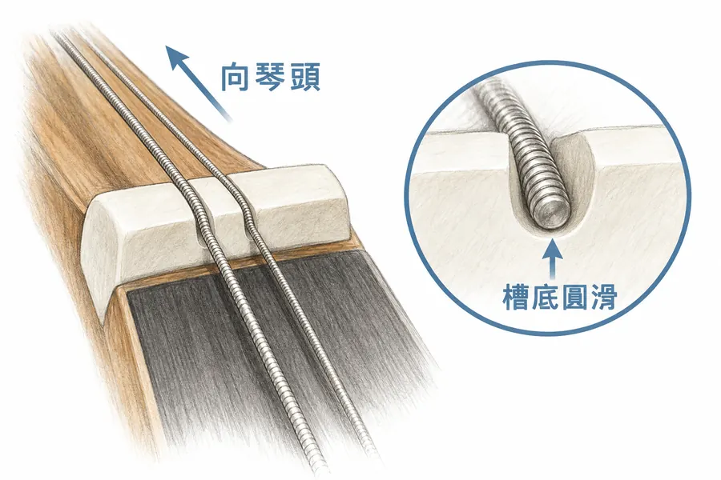
圖解 11.4 上弦枕溝槽（示意）
槽寬也要和弦徑匹配。
| 槽寬狀況 | 後果 |
|---|---|
| 太窄 | 卡弦，造成調音跳動 |
| 太寬 | 可能產生橫向雜音（lateral rattle） |
複弦的兩個槽，高度和間距最好成對一致。
否則同一個 course 的兩根弦，手感會不一樣。
| 重點與應用 | 內容 |
|---|---|
| 核心概念 | 如果空弦準，第一格、第二格的按弦音卻普遍偏尖，最先應檢查 nut slot 高度。 |
| 關係與條件 | 這也是一個很好的診斷範例：若低把位偏尖、十二格大致正常，移琴橋通常不是最佳解。 |
| 應用方向 | 檢查手感、音準與 Setup。 |
11.5 弦高與演奏手感
弦距（action）指的是弦相對指板／琴格的高度。
低 action 確實讓左手省力。
但琴弦振動需要空間。
演奏力度越大、低音弦越粗，所需的淨空（clearance）通常越大。
把 action 壓到極低，可能在輕彈時完美。
但一進入強奏（forte）、和弦切奏（chop）或強力顫音，就開始打弦。
Action 也不是只量一個琴格就能決定。
它是由四個因素共同形成的一條弦路（string path）：
- 上弦枕高度（nut action）
- 琴頸曲度（neck relief）
- 琴橋高度（bridge height）
- 琴格平面（fret plane）
所以診斷時要比較各把位的弦高，了解整條弦路。
| 症狀 | 可能方向 |
|---|---|
| 第一把位高、十二格也高 | 整條弦路都偏高 |
| 第一把位正常、只有高把位高 | 問題集中在後段 |
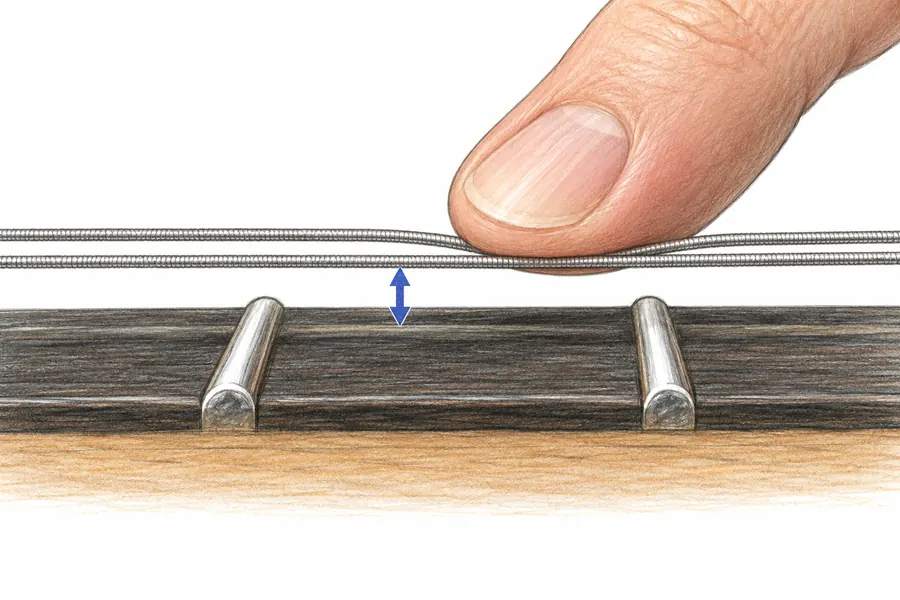
圖解 11.5 弦高與演奏手感（示意）
不同風格也會有不同偏好：
| 風格 | 常見需求 |
|---|---|
| 古典（classical） | 重視顫音的均勻和左手的細膩 |
| 藍草（bluegrass） | 常需要更強的攻擊（attack）與和弦切奏 |
這一段的重點是：「演奏輸入」也應該納入 Setup 的目標。
| 重點與應用 | 內容 |
|---|---|
| 核心概念 | 低 action 確實讓左手省力，但琴弦振幅需要空間。 |
| 關係與條件 | Action 也不是只量一個 fret 就能決定。 |
| 應用方向 | 檢查手感、音準與 Setup。 |
11.6 琴頸弧度
琴弦振動時需要足夠的活動空間。
琴頸留有極輕微的前傾曲度（forward relief），可以在低至中把位提供淨空。
完全反向彎曲（back-bow），則很容易在前幾格就打弦。
但 relief 也不能用來補救所有的高 action。
| 問題 | 調整 relief 的效果 |
|---|---|
| relief 過大 | 會讓中把位難按，卻不一定解決高把位 |
| 琴頸角度本身錯 | 調整 relief 只能暫時改變曲線 |
沒有桁架桿（truss rod）的歷史圓背琴，更需要從整體琴頸狀態判斷。
要依該琴的實際結構，決定處理方式。
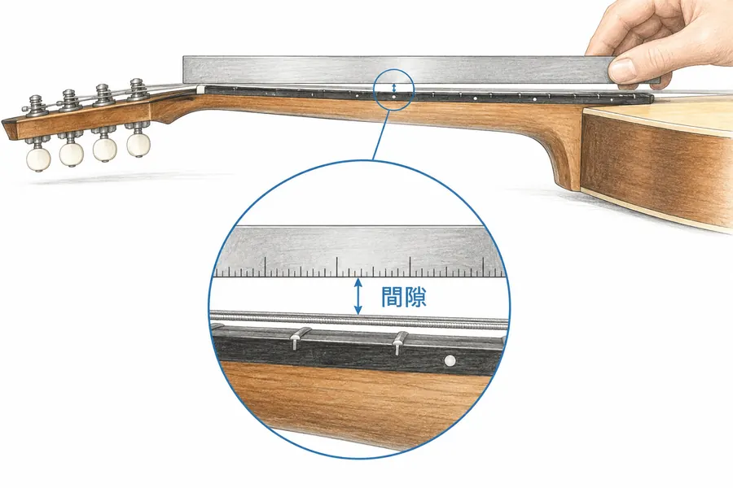
圖解 11.6 琴頸弧度（示意）
檢查 relief 有一個簡單方法：把琴弦本身當直尺。
按住某一 course 的兩端或特定琴格，看中間的淨空。
重點是比較趨勢，以及左右是否一致。
然後再依琴型與演奏需求，評估這個間隙是否合適。
| 重點與應用 | 內容 |
|---|---|
| 核心概念 | 琴弦振動時需要足夠的活動空間。 |
| 關係與條件 | 但 relief 也不能用來補救所有高 action。 |
| 應用方向 | 檢查手感、音準與 Setup。 |
11.7 浮動琴橋定位
理論上，第十二格應該位於有效弦長的中點。
所以 nut 到第 12 格的距離，大約是弦長的一半。
把同樣的距離延伸到琴橋，就可以得到初始位置。
但實際琴弦按下去時會被拉長。
所以琴橋往往還需要補償（compensation）。
操作流程是：
- 先把琴橋放在合理的中心線上。
- 調準空弦。
- 比較第十二格泛音（harmonic）與按弦音（fretted note）。
判讀方式如下：
| 比較結果 | 通常需要 |
|---|---|
| 按弦音偏尖 | 該弦需要更長的有效弦長 |
| 按弦音偏低 | 相反方向 |
但四個 course 的補償需求不同。
所以補償式絃枕／琴橋（compensated saddle / bridge），會讓不同弦的接觸點略有差異。
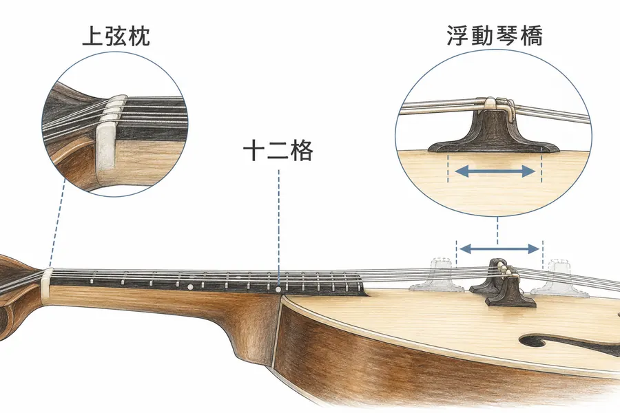
圖解 11.7 浮動琴橋定位（示意）
如果要把琴橋傾斜到非常誇張的角度，才能勉強準，就應該停下來。
回頭檢查這些因素：
- 弦長／琴格位置（scale / fret position）
- 上弦枕高度（nut action）
- 弦徑（string gauge）
- 琴格磨耗（fret wear）
- 琴橋是否放反了
演奏設定的原則有兩條：找出原因，以及保留調整餘量。
| 重點與應用 | 內容 |
|---|---|
| 核心概念 | 理論上，第十二格應位於有效弦長中點，因此 nut 到 12th fret 的距離約是 scale 的一半。 |
| 關係與條件 | 操作時先把橋放在合理中心線上，調準空弦，再比較十二格 harmonic 與 fretted note。 |
| 應用方向 | 檢查手感、音準與 Setup。 |
11.8 音準補償與檢查
空弦調音只能校正四個空弦音高（open pitches）。
一旦按弦，弦長和張力都改變。
所以音準還會受這些因素影響：
- 弦距（action）
- 按弦力量
- 琴格位置
- 補償（compensation）
這就是 intonation（音準）的核心：
讓實際演奏音在整個指板上都合理。
十二格是最常用的檢查點，因為理論上它正好是八度。
但不應該只看十二格。
| 你的主要用途 | 應該檢查哪裡 |
|---|---|
| 低把位和弦 | 1–5 格 |
| 高把位獨奏（solo） | 12 格以上 |
完美符合所有琴格，幾乎不可能。
Setup 的目標，是把誤差分布到音樂上可接受的程度。
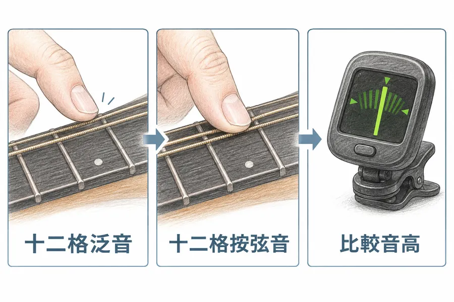
圖解 11.8 音準補償與檢查（示意）
常見誤解：「量音準時用力按，比較準。」
相反。按弦力量也會影響測量。
如果測 intonation 時用比平常演奏更大的力，會把音推尖。
最後調出的琴橋位置，可能反而不適合真實演奏。
最好用正常手感，並且多次重複。
| 重點與應用 | 內容 |
|---|---|
| 核心概念 | 空弦調音只校正四個 open pitches。 |
| 關係與條件 | 十二格是最常用檢查點，因為理論上正好是八度，但不應只看十二格。 |
| 應用方向 | 檢查手感、音準與 Setup。 |
11.9 打弦與異音診斷
打弦（buzz）的來源比想像中多。
它可能來自琴格接觸，也可能來自：
- 尾弦板（tailpiece）
- 鬆動的調音器（tuner）
- 琴橋絃枕（bridge saddle）
- 護板（pickguard）
- 弦尾
- 甚至琴體內部的鬆動力木（loose brace）
第一步應該判斷三件事：在哪些音、哪種力度、哪一根 course 出現。
記錄症狀之後，再決定要調整哪一項。
| 症狀 | 可能方向 |
|---|---|
| 只有空弦 buzz | 上弦枕槽、尾弦或硬體 |
| 某個琴格開始，之後一路 buzz | 高琴格或琴頸曲度 |
| 所有弦在強奏時一起 buzz | action 過低 |
| 某特定音無論在哪根弦都金屬異響 | 共振中的硬體 |
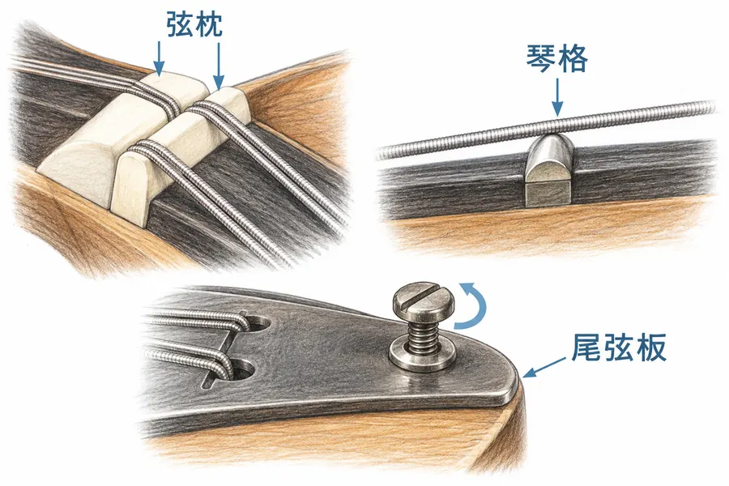
圖解 11.9 打弦與異音診斷（示意）
這種症狀地圖（symptom map）能大幅減少「修錯地方」。
常見誤解：「有雜音就把琴橋升高。」
把琴橋升高，也許能掩蓋琴格問題。
但會讓整把琴的手感變差。
同樣地，把單一琴格磨低，也許能短期安靜，卻可能破壞整體的平整度。
| 重點與應用 | 內容 |
|---|---|
| 核心概念 | Buzz 可以來自 fret contact，也可以來自尾弦板、鬆動 tuner、bridge saddle、pickguard、弦尾甚至琴體內部 loose brace。 |
| 關係與條件 | 若只有空弦 buzz，常見方向是 nut slot、尾弦或硬體。 |
| 應用方向 | 檢查手感、音準與 Setup。 |
11.10 更換弦徑與特殊調弦
換弦徑會改變整個平衡。
| 換法 | 連帶變化 |
|---|---|
| 換較重的弦 | 總張力增加，可能使琴頸曲度增加、action 上升 |
| 換較輕的弦 | 曲度可能變小，原本不打弦的琴開始打弦 |
這些變化是否明顯，取決於四件事：
- 琴頸剛性
- 是否有桁架桿
- 琴體結構
- 原本的 Setup
替代調弦（alternative tuning）也一樣。
整體降半音會降低張力。
某些特殊調弦（scordatura）只改一兩個 course，則會讓四組弦的受力分布不再對稱。
歷史曲目如果要求特殊調弦，應該先確認兩件事：弦組和琴體是否適合。
然後選用符合目標音高與張力的弦組。
美國古典曼陀林協會（Classical Mandolin Society of America，CMSA）的記譜指南也提醒：曼陀林家族存在 scordatura 例外。〔S716〕
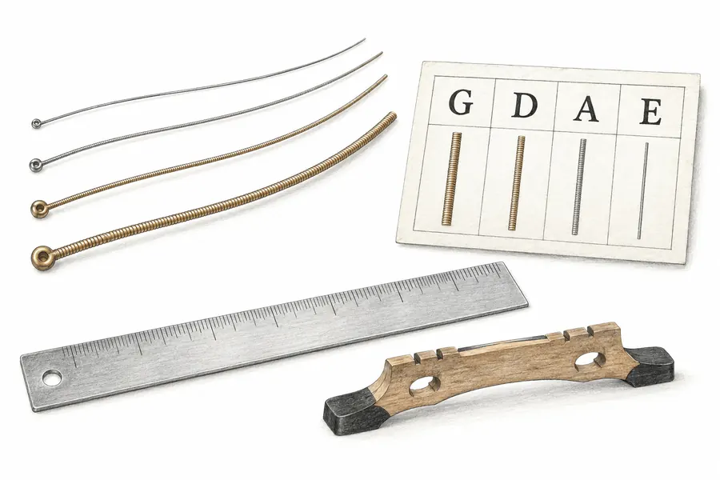
圖解 11.10 更換弦徑與特殊調弦（示意）
大型家族成員更不可以混用。
Calace 的曼陀拉同時提供 G 調與 C 調版本，弦長 43.2 cm。
這兩種調弦需要各自的弦組。
光看琴的外型，無法安全決定要裝什麼弦。〔S712〕
| 重點與應用 | 內容 |
|---|---|
| 核心概念 | 換較重弦可能增加總張力，使 neck relief 增加、action 上升。 |
| 關係與條件 | Alternative tuning 也一樣。 |
| 應用方向 | 檢查手感、音準與 Setup。 |
11.11 案例：三種設定問題的處理
| 案例 | 症狀 | 優先檢查 | 不要先做 |
|---|---|---|---|
| 一 | 空弦準，前幾格普遍偏尖，十二格尚可 | 上弦枕高度，再看按弦力 | 先移琴橋 |
| 二 | 十二格全部偏尖，低把位也略尖，琴橋曾被拆過 | 重新校正琴橋位置，再檢查上弦枕 | — |
| 三 | action 高，琴橋已降到底 | 琴頸角度、面板變形、琴格平面 | 繼續削琴橋 |
案例三要先確認結構問題，再決定維修方式。
另外還有兩個案例：
| 案例 | 症狀 | 可能方向 |
|---|---|---|
| 四 | E course 只有空弦 buzz，按第一格後消失 | E 弦的上弦枕槽過低，或空弦端點問題 |
| 五 | 強奏才 buzz，輕奏完全正常 | action 與演奏輸入不匹配，不一定是製造瑕疵 |
案例四要注意：如果所有空弦都 buzz，才需要考慮整體上弦枕或硬體。
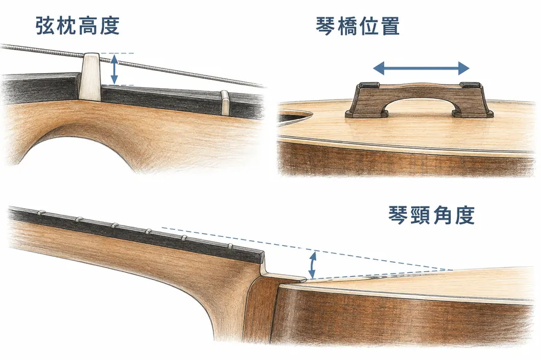
圖解 11.11 案例 三種設定問題的處理（示意）
這些案例的共同原則是：症狀位置比症狀名稱重要。
同樣叫 buzz，發生在空弦、單一琴格、所有高把位或特定音高，代表不同可能原因。
把診斷做對，調整才有方向。
表 11-1｜症狀導向的 Setup 診斷
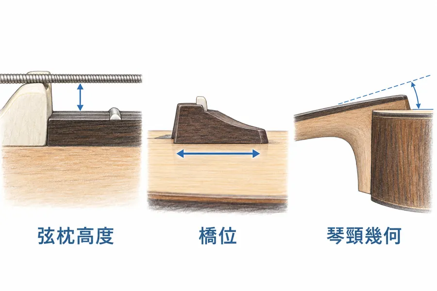
| 症狀 | 優先檢查 | 不要先做什麼 |
|---|---|---|
| 低把位普遍偏尖 | nut slot 高度（上弦枕槽）、按弦力 | 先大幅移 bridge（琴橋） |
| 12th fret 普遍偏尖 | bridge location（琴橋位置）、scale（弦長）、弦規 | 磨 fret（琴格） |
| Action 高且 bridge 已到底 | neck angle（琴頸角度）、top geometry（面板幾何） | 繼續削 bridge |
| 只有 open string buzz | nut slot、弦尾／硬體 | 整體升 action |
| 強奏才 buzz | 演奏振幅、action、relief（曲度） | 把所有 fret 重磨 |
圖解 表 11-1｜症狀導向的 Setup 診斷（示意）
| 【張力重點】 同一 unit weight、同一音高下，張力與 scale length 的平方成正比。家族樂器不能把同一組弦直接「放大使用」。 |
|---|
| 【安全界線】 Nut slot、fret leveling、neck angle、老琴琴頸矯正都可能不可逆或高風險。若缺乏經驗，量測可以自己做，切削最好交給製琴師。 |
|---|
自我學習題庫

學習檢查：作答、核對、複習
先自己作答，再看答案。答錯時回到本章相關小節重新讀一次。
1. Action 指的是？
-
A. 弦相對指板／琴格的高度
-
B. 琴弦材質
-
C. 琴身長度
-
D. 撥片厚度
2. 空弦調準但高把位普遍偏尖，應先檢查？
-
A. 琴橋位置與 intonation
-
B. 琴盒
-
C. 背帶
-
D. 音孔形狀
3. 換成明顯不同 gauge 的弦後？
-
A. Setup 可能需要重新檢查
-
B. 一定不用調整
-
C. 只會改顏色
-
D. 琴橋會自動補償
答案：1.A 2.A 3.A
本章主要查證來源

查證來源：找原文、核條件、留紀錄
【S711】Liuteria Calace：Mandolini – official specifications（accessed 2026-10-06）。 33.5 cm 弦長、24/29 格、25/31/33 ribs、spruce top、rosewood/maple body 等現行規格。
https://www.calace.it/en/mandolini
【S712】Liuteria Calace：Mandole – official specifications（accessed 2026-10-06）。 43.2 cm（部分可 45.6 cm）scale、G/C 調 mandola、25/33 ribs 與材料配置。
https://calace.it/en/mandole
【S713】Liuteria Calace：Mandoloncelli & Liuti – official specifications（accessed 2026-10-06）。 61 cm scale、8/10 弦、25/41 ribs、不同琴體尺寸與材料配置。
https://calace.it/en-mandoloncelli-liuti
【S714】Suzuki Music / Suzuki Violin：2017 String Instrument Catalog（2017）。 M-30、M-100、MD-4、MD-10、MC-836 的弦長、木材與規格。
https://www.suzuki-music.co.jp/app/uploads/2017catalog14.pdf
【S715】D'Addario：A Complete Technical Reference for Fretted Instrument String Tensions（technical guide）。 弦張力與 unit weight、scale length、frequency 的關係與公式。
https://www.daddario.com/globalassets/pdfs/accessories/tension_chart_13934.pdf
【S716】Robert A. Margo / Classical Mandolin Society of America：Music Notation for Mandolin Family Instruments（v3, 2019）。 曼陀林家族標準調弦、譜號、實音／移調記譜與地域名稱差異。
https://classicalmandolinsociety.org/wp-content/uploads/Music_Notation_for_Mandolin_Family_Instruments_v3.pdf
【S721】D'Addario：What Is Guitar String Tension?（current resource）。 unit weight、scale length、frequency 三變數對張力的說明。
https://www.daddario.com/blogs/guitar/all-about-string-tension
從讀譜和指板開始，依序練習雙手、和聲與表情，建立可持續的練習方法。
閱讀範圍 第 12 章至第 17 章